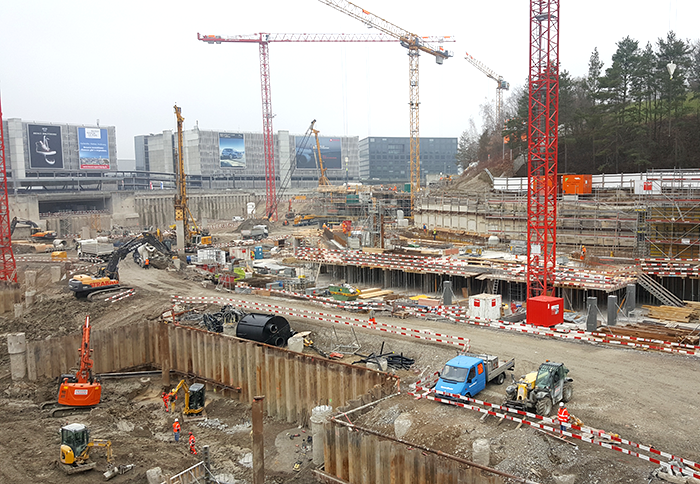

Project: THE CIRCLE, ZÜRICH AIRPORT



THE CIRCLE, ZÜRICH AIRPORT
NYX architectes GmbH is commissioned from the architecture office Richter - Dahl Rocha & Associés architectes SA in Lausanne to collaborate on the construction drawings of a part of the project “The Circle” at the Zürich airport. NYX architectes works at the execution of the H15, a 10 floors building including shops, offices, bars, restaurants and a **** Superior hotel (Hyatt Regency) of 256 hotel rooms.
The author of the project and leading architect is Riken Yamamoto & Fieldshop of Yokohama, Japan. The general contractor responsible for the construction work is HRS Real Estate AG in Zürich.